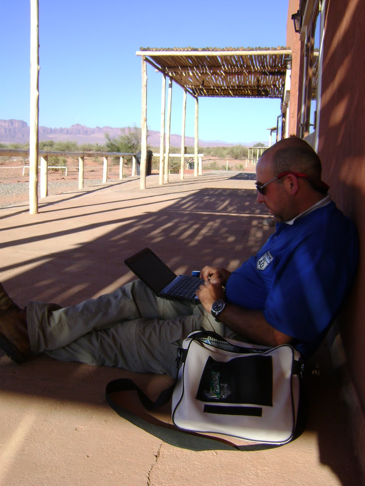
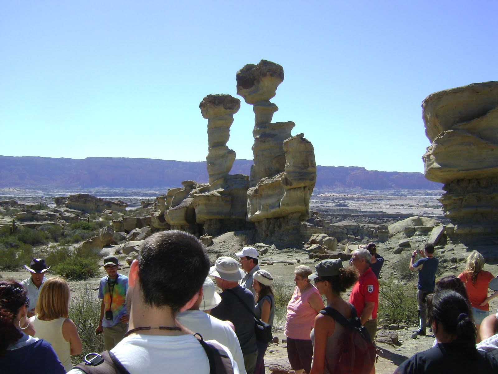
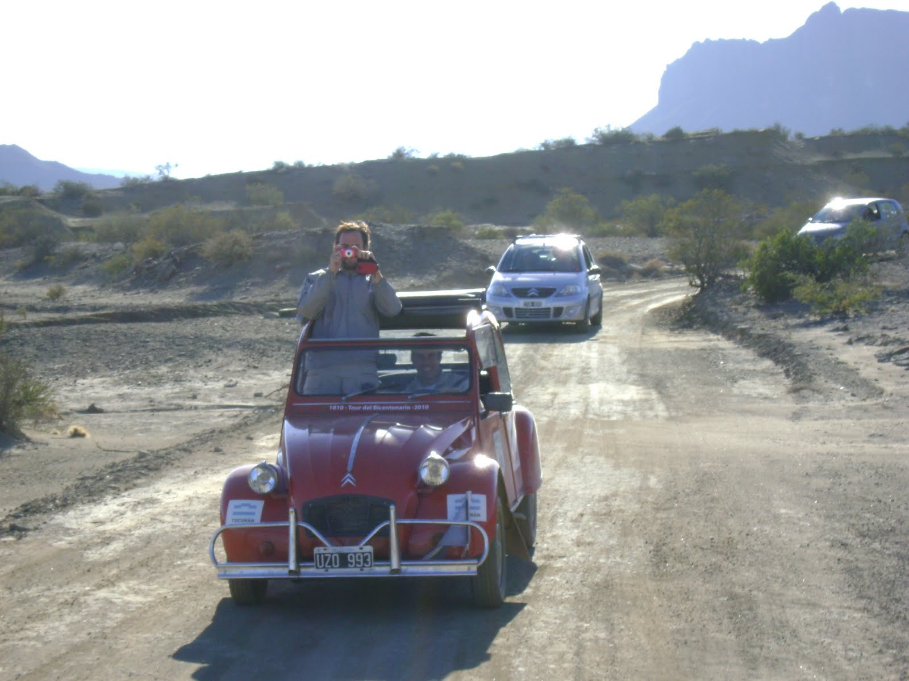
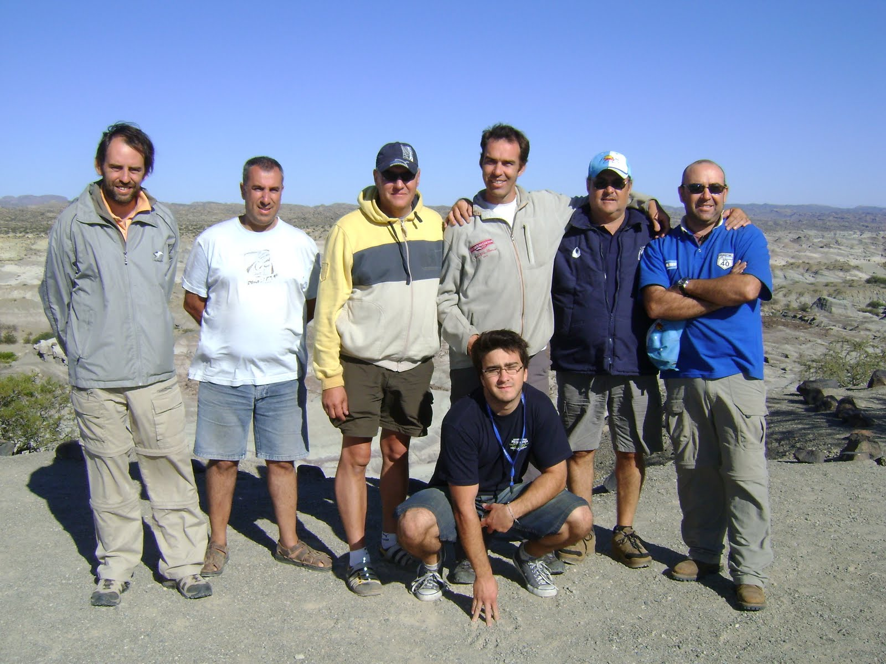

La madrugada nos encontró dentro de nuestras bolsas de dormir, sobre los aislantes, en el piso de la habitación que nos cedieron en lo de Alba. Los lugareños estaban levantados a las 5 de la mañana y se cruzaron con alguno de nuestros citronautas prostaticos....jajaja.
Después de ver la salida del sol nos dispusimos a desayunar. Café con leche, pan de campo casero y mermelada.
La comitiva partió hacia el Parque Provincial Ichigualasto, conocido popularmente como "Valle de la Luna". Las Citronaves fueron fotografiadas y despertaron la curiosidad de los visitantes del parque, que se acercaban a preguntar y charlar. Nuestra curiosidad la despertó un ingles que en su moto venia recorriendo el mundo. Había partido desde Londres el 9 de agosto de 2009 y en el costado de su moto iba marcando su recorrido(ver algunas fotos). Sorprende también la cantidad considerable de extranjeros que están por estos lugares. Camino a Baldecitos nos cruzamos con una motor-home que venia recorriendo el mundo desde Alemania.
Daniel, que era como se llamaba el guía, hizo gran parte del recorrido a bordo del C3. Tuvimos la oportunidad de conversar bastante y el privilegio de que nos contara por menores del lugar. Las figuras que se observan en el recorrido son: el gusano, cancha de bochas, el submarino y el hongo. Ademas nos cruzamos con varios guanacos, que miraban desorientado a toda la caravana de autos. Les llamaría la atención las Citronaves????
La vuelta fue larga y fuera de nuestros cálculos. 45km. Esto hizo que Mafalda se quedara sin combustible y demorara nuestros planes. El Héroe del día: PEDRO Y NOELIA!!!.
Con una infinita paciencia fueron a comprar combustible y re abastecimos lo suficiente para llegar a todas las naves, incluido el C3 que estaba funcionando con los vapores. La demora no permitió que realizáramos el circuito, así que desde el parque Talampaya les escribí algunas lineas, ya que había WIFI.
El camino al Rodeo no encontró en el anochecer. Hacer ese camino de Cornisa entre las montañas, de noche, atravesando túneles impresionantes, créanme que tuvo su emoción. Es cierto que por la hora, nos perdimos contemplar la belleza del paisaje, pero esto de la noche conduciendo las Citronaves por la montaña, fue una experiencia que dudo me vaya a olvidar.
Llegamos al Rodeo cerca de las 12 de la noche. Para nuestra sorpresa, el Sr. Intendente nos estaba esperando en el alojamiento, el cual le agradecemos infinitamente, y nos dio algunos consejos turísticos. UN LUJO!!!
Me he puesto al día. Me faltan vídeos y fotos ya que el ancho de banda es muy bajo(53Kb). Paciencia y muchas Gracias por seguirnos!!!!
como veo francho... seguis estresado... jajajaja!!! espero que sigas juntando anecdotas para elvinito cuando vuelvas!! abrazo!!!